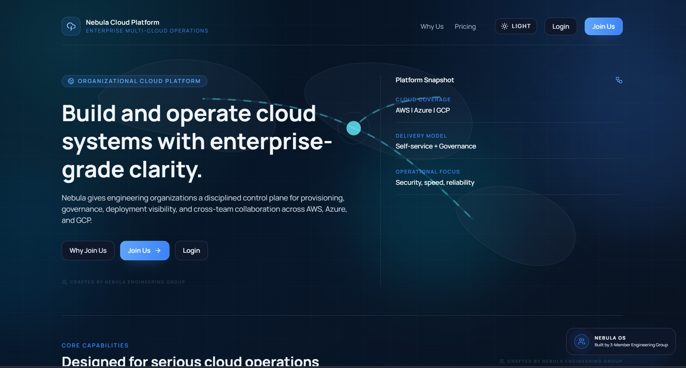

Final Year B.Tech Project Poster
NEBULA: THE MULTI-CLOUD COMMAND CENTER
A Unified Orchestration Engine for AWS, Azure, and Google Cloud Platform
Nebula provides a unified control plane for cloud provisioning, inventory synchronization, monitoring, billing visibility, and AI-assisted troubleshooting through one secure, asynchronous workflow.
Cloud operations become fragmented when teams switch between multiple provider consoles, credentials, and deployment workflows.
Use a layered control-plane architecture with React, FastAPI, PostgreSQL, Redis, Celery, and Terraform.
Measured implementation evidence is AWS-backed today, while the architecture remains ready for broader multi-cloud expansion.
Objectives & Significance
- Unify provisioning, monitoring, billing visibility, and troubleshooting across fragmented cloud workflows.
- Reduce operational inconsistency caused by separate AWS, Azure, and GCP interfaces.
- Preserve user responsiveness by shifting long-running tasks to Redis and Celery workers.
- Protect provider credentials through encrypted storage and short-lived worker-side usage.
- Improve observability with explicit lifecycle states, logs, health checks, and synchronized inventory data.
System Architecture
The platform follows a modular, containerized, asynchronous architecture. The current runtime is validated on AWS, while Azure and GCP remain first-class targets in the orchestration design.
Key Modules & Implementation
Unified Dashboard
React 19 and Vite power one interface for cloud accounts, resources, dashboards, billing, and deployments.
Secure Credential Vault
Provider credentials are encrypted at the application layer and only materialized inside task execution scope.
Inventory Synchronization
Scheduled sync jobs collect provider-side inventory and normalize it into a consistent internal model.
Provisioning Engine
Terraform modules map abstract user requests to provider-native infrastructure resources.
Lifecycle Tracking
Requests move through explicit states such as pending, provisioning, and active with execution evidence.
AI Troubleshooting Copilot
Log-semantic analysis supports failure interpretation and remediation guidance for operator workflows.

Workflow Diagram
Asynchronous dispatch keeps the API responsive while resource creation, synchronization, and failure handling proceed in background execution workers.
Results & Interpretability
Interpretability
- Lifecycle states are explicit and traceable from pending to provisioning to active.
- Execution logs and metadata are preserved for diagnostics and auditability.
- Billing outputs provide service-level cost interpretation instead of disconnected console views.
- AI-assisted remediation turns raw provisioning errors into readable operator guidance.
Measured results are drawn from the AWS-backed implementation environment. The control-plane design remains intentionally extensible for Azure and GCP.
Applications
Academic Labs
Provision cloud experiments and teach orchestration concepts through one guided interface.
Startup Platforms
Centralize resource provisioning, visibility, and cost monitoring for small engineering teams.
DevOps Operations
Track deployments, infrastructure state, and failures without switching between provider consoles.
Guided Troubleshooting
Support operators with readable logs, remediation hints, and consistent workflow evidence.
Conclusion
Nebula demonstrates that cloud operations can be made more reliable, auditable, secure, and user-friendly through a unified asynchronous orchestration architecture. Rather than hiding cloud complexity, the platform structures it into repeatable workflows with clear states, visible logs, and consistent control-plane behavior.
Future Work
WebSocket-based real-time logs and richer live operational feedback.
Cost intelligence for idle assets, right-sizing, and budget alerts.
Policy-as-code and compliance checks before infrastructure creation.
Predictive governance, anomaly scoring, and risk-prioritized actions.
Stronger Azure and GCP execution coverage after AWS baseline hardening.
Kubernetes, hybrid-cloud, and advanced multi-environment orchestration.